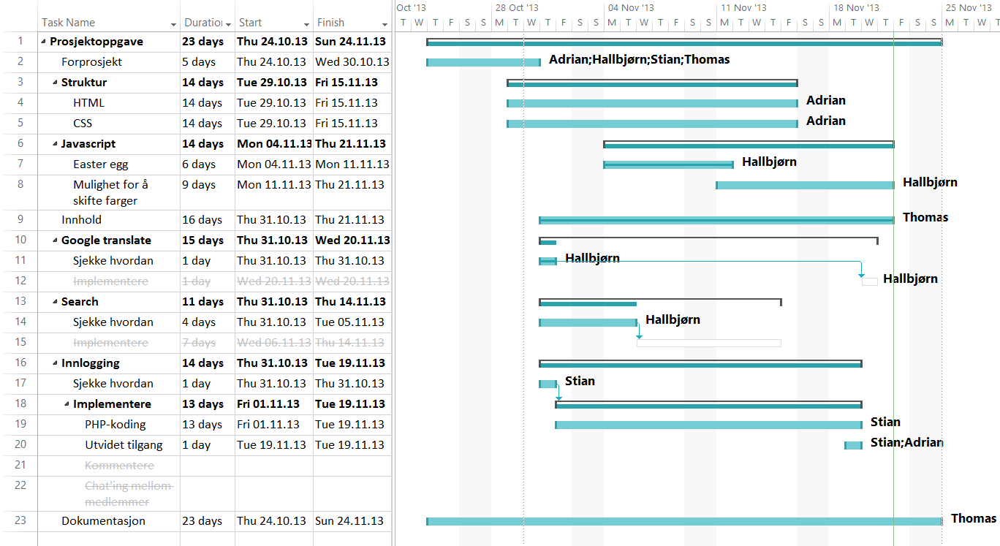

Thomas Newman s198753
Stian Eidet s198532
Hallbjørn Storruste s165519
Adrian Westlund s198571
HiOA Høsten 2013
Prosjektet startet med en ide Thomas Newman hadde om å lage en webside om et av historiene han hadde laget. Han ønsket at flere skulle kunne lese den og den skulle være fritt for alle å lese. Den skulle også gi muligheten for lesere å skrive kommentarer, men som en liten sikkerhet så skulle bare de som hadde blitt medlemmer av siden kunne kommentere og få tilgang til ekstra materiale som Thomas hadde laget for egen skyld. Den skulle også ha mulighet for en search funksjon for å lete etter en spesifikk ord eller setning og en oversettelses funksjon siden historien og ekstra innholdet var skrevet på engelsk. Alle skulle ha muligheten til å kunne forandre fargene for både skrift og bakgrunn for å forbedre lese opplevelsen sin.
Faglig bakgrunn Dette prosjektet skulle bygges på det vi hadde lært til nå, med spesiell fokus på HTML5, CSS, php og JavaScript. Den skulle også strekke både vår fantasi og tekniske kunskaper til å lage denne websiden. Formålet med prosjektet var å lage en webside som forbedret lese-erfaringen av Thomas Newmans sin science fiction historie. Den skulle være lett å lese for alle, inkludert de med svakt syn og de blinde, i andre ord universalt utformet.
Vi valgte Thomas Newman til leder for prosjektgruppa. Siden er til for å publisere hans historie og forfatterskap. Det var derfor et ønske og naturlig for han å være leder for prosjektet. Vi var likevel enige om at vi ønsket en demokratisk prosess med prosjektleder som hadde siste ord.
Informasjonsinnsamlig hadde allerede blitt gjort av Thomas Newman for historien sin.
Vi har brukt Work breakdown structure(WBS), for å bryte prosjektet ned til oppgaver som vi fordelte mellom oss. Så satt vi dem inn i et Gantt-diagram for å ha en oversikt over fremgangen i prosjektet. (Hasle, 04.11.2013)
Vi har oppdatert Gantt-diagramet fortløpende ettersom vi har sett behov for det.
Tre av oss har sittet sammen og jobbet gjennom hele prosessen som har gjort at vi har kunnet ta raske avgjørelser. Vi har hatt fortløpende uformelle møter, dvs vi har avtalt hva vi går videre med og hva vi forkaster.
Videre har vi valgt å bruke Github til versjonhåndtering. Dette har gjort at vi lett har kunnet oppdatere våre egne versjoner fortløpende, samtidig som vi kunne finne tilbake til tidligere versjoner.
Vi ville lage en hjemmeside som var lett å navigere. Siden består av omtrent 150 undersider, og vi vil derfor ha behov for veldig mange linker. Mange linker kan forstyrre leseopplevelsen. Vi har derfor valgt å ha knapper med underlinker. Ved å velge dette minsker vi mengden av linker som vil synes når man ikke bruker dem. For å få til dette har vi brukt javascript.
I tillegg har vi lagt til pilknapper som man bruker for å komme til neste side i kapitellet. Pilene på tastaturet kan også brukes for å gjøre det samme. Vi brukte php og javascript til å generere koden til disse pilene. På denne måten ble det lettere å vedlikeholde siden, fordi man kan legge til kapitler og flere sider uten å forandre koden.
Vi ville at bakgrunnsbildet skulle speile Star Wars, som er vårt tema for hjemmesiden. Bildet vi har valgt er lett å bruke med "flislegging", og det gjør den mer responsiv.
For at hjemmesiden skal se fin ut på ulike typer av skjermer, har vi valgt å gjøre den responsiv. Dette var noe vi ikke hadde gjort før, så det ble mye "prøv og feilteknikk". Vi har forsøkt å bruke prosent så mye som mulig for å få det til.
Vi har implementert en mulighet for å skifte farger på skrift og bakgrunn, for at hver enkelt bruker skal kunne velge hvilken stil som er best å lese i. Vi lagde en funksjon for å bytte farge ved hjelp av javascript, men et problem med denne funksjonen var at fargene gikk tilbake til standard når vi gikk til neste side. Vi valgte til slutt å gå for en annen løsning der vi trigget forskjellige stilark ved hjelp av cookie. Dette var en mye bedre løsning, da det åpnet flere muligheter til forandring av stil og vi løste også problemet med at stilen forandret seg når man bladde i kapitlene.
Vi ville ikke ekskludere noen fra målgruppen vår og har forsøkt å lage en side der det skal være behaglig og lett å lese historien.
Vi har lest om brukervennlighet, og har funnet mye bra informasjon på hjemmesiden til uleselig.no(Uleslig.no, udatert). Der leste vi at en font med serif er vanskeligere å lese enn en uten serif. Vi har derfor valgt å bruke arial, som er en sans-serif font.
I headeren har vi valgt en font i star wars stil. Da den fonten kan være vanskelig å lese har vi valgt å bare ha den der.
Vi leste også om hvilke fargekombinasjoner som er behagelige for øyet over lengre tid. Med bakgrunn i denne kunnskapen, valgte vi å legge til en funksjon slik at brukeren kan endre stilark. Brukeren kan dermed velge seg en behagelig fargekombinasjon. Gult og blått skal være en av de mest behagelige fargekombinasjonene, men vi har også valgt noen stilark som vi synes ser fine ut.
Det svart-hvite stilarket skulle være et valg for utskrift, men på grunn av tidsmangel har den ikke blitt optimal. Dette er noe vi kunne ha jobbet mer med dersom vi hadde hatt tid.
Vi ville lage en innloggingsfunksjon. Denne funksjonen skulle gjøre at spesielt interesserte skulle kunne chatte sammen og kommentere/skrive i gjestebok. I tillegg skal brukeren få tilgang til eksklusivt innhold. Eksklusivt innhold kan utvides etter behov. For å ha en slik innloggingsfunksjon trengte vi en database. Vi valgte å bruke HiOA sin database. Her skal brukerens informasjon lagres. Databasen skulle også brukes til gjesteboken. Grunnen til disse funksjonene var at vi ville holde siden fri for spam og at vi kan utestenge brukere vi mener ikke oppfører seg. På grunn av begrenset med tid valgte vi å droppe gjesteboken og muligheten for å chatte sammen i denne omgang.
Vi hadde lyst til å gjøre et easter egg som skulle passe til temaet på siden. Hallbjørn var inspirert av Alfred Bratterud sin forelesning, der han hadde lagd fyrverkeri (Bratterud, 02.10.2013), og hadde tidlig en ide om hvordan vi kunne lage noe artig. Resultatet ble et romskip som flyr rundt på skjermen. Hastighet og retning bestemmes ut fra et tilfeldig tall og den forandrer retning når den treffer kanten på siden. Vi ville ha et bilde med transparent bakgrunn, og fant en .gif av millenium falcon som passet bra. Easter eggget trigges ved at man skriver «star wars».
Vi har klart mesteparten av de målene vi satte ut med i dette prosjektet. Vi bygget opp over 150 individuelle HTML sider med tekst. Vi har fått til en enkel måte for brukere å lese og navigere rundt historien. Vi har fått til en innloggingsfunksjon som gir aksess til ekstra materiale, og kanskje ved et senere tidspunkt kan vi implementere kommentar/chat funksjonen.
På grunn av andre oppgaver og jobb utenfor skolen så måtte vi jobbe langt utenfor den tiden vi hadde satt av for å fullføre prosjektet og skrive opp dokumentasjonen, men vi fikk til slutt fiksa opp den siste delen og fikk et produkt som fungerte. Siden vi ikke hadde mye forkunnskaper så viste vi ikke hvor lenge det kunne ta eller hvor vanskelig det kom til å bli.
Vi hadde en idé om at det skulle være mulig å gjøre søk på siden. Ingen av oss hadde i utgangspunktet noe kunnskap om hvordan dette skulle gjøres, men det ville vært en god funksjon på en side med mye informasjon. Vi undersøkte litt om hvordan dette skulle gjøres, eventuelt med javascript, men fant fort ut at det var vanskelig og tidkrevende å skrive en bra kode for så mange sider. Den beste løsningen hadde nok vært å implementere «Google site search», men dette ville ikke være kode som vi hadde skrevet selv og derfor ikke noe vi ville prioritere i dette prosjektet. Funksjonen var uansett en sekundær funksjon og vi nedprioriterte derfor denne. Det kan eventuelt bli aktuelt å implementere en slik funksjon ved et senere tidspunkt.
Vi vurderte om vi skulle implementere «google translate» på siden for å gjøre teksten tilgjengelig på flere språk. Dette hadde vært enkelt å gjøre, men vi valgte å droppe dette siden det i så fall ville være ferdig generert kode.
Tidligere i prosjektet snakket vi om å legge til en kommentar/chat funksjon på siden, men det tok lengre tid enn vi hadde planlagt å sette opp PHP for websiden og legge inn navigasjons funksjonene. Etter en stund så bestemte vi at kommentar/chat funksjonen ville ta for lang tid til å lære og implementere og ville nok resultert i en halvferdig stykke javaScript som ville ikke fungert ordentlig, men er kanskje noe vi kan implementere på et senere tidspunkt.
I oppstartfasen hadde vi en del bortfall, som satte et stort press på oss til å komme opp med en ide raskt. Og i starten var det to av oss som hadde en rask brainstorming, men kom bare fram til et konsept. Senere var også et annet gruppemedlem borte noen dager, som gjorde at en del avgjørelser måtte tas i hans fravær. Dette var kanskje uheldig, men uunngåelig på den tiden.
Thomas, Adrian og Hallbjørn har sittet og jobbet tett sammen. Selv om vi fordelte oppgavene mellom oss har vi hjulpet hverandre mye. Tre hoder tenker bedre enn ett. Stian hadde ikke så ofte mulighet til å jobbe sammen med oss, og jobbet derfor mye alene med sine oppgaver.
I ettertid ser vi at vi kunne ha skrevet en samarbeidsavtale for å definere plikter og oppgaver, samt vite mer om forventet arbeidsinnsats. Dette kunne gjort prosessen ryddigere og bedre.
Jeg (Stian Eidet) med hjelp fra (Hallbjørn) har hatt ansvaret for innloggings funksjon. Det meste har gått greit underveis, selv om jeg kom litt tregt i gang. Php delen inkludert databasen skulle være ferdig i løpet av de første ukene. Dette skjedde ikke fordi jeg hadde mye å gjøre utenom skolen. Når jeg først kom i gang gikk det relativt greit. Jeg har ikke jobbet alt for mye med databaser så det ble mye research.
Selve arbeidet gikk fint, men tok lang tid. Det gikk fremover hele tiden, men det gikk ikke så fort som jeg ville. Planen var å implementere en innloggingsfunskjon som gjorde at folk som var over middels interessert kunne lage en bruker. Denne brukeren skulle få tilgang til materielle som bare andre medlemmer kunne se. i tillegg skulle medlemmene kunne chatte sammen og skrive i gjesteboken.
Jeg skjønte fort at en chatte funksjon var det ikke tid til. Jeg hadde aldri laget noe slikt tidligere. Som sagt gikk selve innloggingsfunskjonen greit, men tok mye lengre enn forventet. Selve databasen ble satt opp tidlig. veldig flaks at dette ble gjort tidlig. For når koden var ferdig skulle alt testet og Under denne testingen sluttet skolens database å fungere. Dette var litt krise fordi nå ble nesten hele innloggingsfunskjonen ubrukelig. Den er avhengig av databasen for å fungere. Databasen var omsider oppe og gikk. innlogging er fikset og fungerer, men møtte noe problemer med registrering. Etter en del fiksing av buggs fungerer registreringen. Etter mye tweaking fungerer omsider alt som det skulle.
Når mesteparten av gruppa kom sammen å hadde vi en raskt brainstorming runde og satte opp en rask forprosjekt rapport, skrevet av meg med input fra de andre. Mesteparten av 'faktainnsamlingen' for historien hadde jeg gjort i det siste to-tre årene som jeg har skrevet på denne historien. Mesteparten var info fra fan wiki-siden wookiepedia og lite grann inspirasjon fra den virkelige verden.
Når vi begynte dette prosjektet var historien på 11 kapitler og 75,411 ord i word dokumenter. I starten så lette jeg etter måter å raskt konvertere .docx filer til html format, men etter å ha lest litt nærmere på prosjekt oppgave kravene så bestemte vi å formatere hele historien selv, som ble min oppgave til slutt, i tillegg til å være prosjekt leder. I alt så var det 150 sider å formatere til html som er en tidskrevende prosess. Etter en stund så ble det mer automatisk for meg, men fortsatt tok tid. Etter det så hadde vi også tre sider med ekstra materiale som jeg ønska å legge til, som en liten ekstra materiell på en DVD. Jeg skrev forordet for både historien og prosjekt rapporten, og satte opp "skjellettet" for html filene for både forprosjekt rapporten og prosjekt rapporten, pluss en CSS stylesheet for en utskrifts vennlig versjon for forprosjekt rapporten.
Som prosjektleder så var jeg en mer stille leder og hørte på alle sammen sine innspill og stolte på de som hadde oppgavene til å gjøre dem, og oppfulgte så mye som mulig på gruppens fremgang, og siden mesteparten av gruppa var i samme rom så kunne vi bruke en demokratisk prosess med meg som hadde siste ordet på avgjørelser på hvordan siden skulle se ut. For å fullføre nettsiden når det gjaldt koding og struktur så løste vi problemene som en gruppe. På den måten så kunne vi raskt respondere på bugs som dukka opp.
Det jeg har lært mest fra dette prosjektet er hvor enkelt det er å feilestimere hvor lang tid det tar, spesielt når man ikke har mye forkunnskaper, og hvor viktig kommunikasjon mellom gruppemedlemmer er.
Hallbjørn:Når vi skulle fordele oppgavene oss imellom hadde jeg et ønske om å jobbe med javascript. Jeg hadde allerede flere ideer som jeg ville jobbe videre med, som også kunne brukes på siden vi skulle lage. Derfor var jeg tidlig igang med å lage et Easter egg. Her måtte jeg prøve meg mye frem. Men etter hvert med mye testing og feiling, føler jeg resultatet ble veldig bra.
Vi brukte mye tid på å lage navigasjonsknapper som skulle gjøre det mulig å bla gjennom undersidene. Jeg hadde svært lite kunnskap om php, men har lært mye om det for å få til dette. Knappene hadde jeg prgramert med javascript allerede, men når jeg fikk til php koden ser jeg at dette muligens hadde vært lettere å gjøre med php. Men uansett det fungerer bra slik det ble tilslutt.
Jeg jobbet også sammen med Adrian om å programmere skifting av farger på siden. Her laget vi først en funkjson med javascript, men valgte siden å trigge et helt annet stilark ved hjelp av cookies.
Jeg har lært mye, spesielt om javascript og php gjennom å prøve meg frem. Og jeg får mange artige ideer som jeg har lyst å jobbe videre med. Jeg tror vi har hatt veldig nytte av å sitte på samme sted å jobbe. Kommunikasjon er veldig viktig og jeg ser at vi som har sitte sammen har hatt en god oversikt over fremgangen i prosjektet.
Jag har valt att skriva denna reflektionen på svenska då det är mitt modersmål.
Innan jag startade på HIOA hade jag aldrig jobbat med program som html och CSS. Så mina kunskaper i ämnet var lika med noll. Nu när vi är färdiga med kursen och projektet har jag fått mycket kunskap i ämnet och är nöjd med slutresultatet på hemsidan.
Vi bestämde fort vad för hemsida vi ville laga och kom bra igång med arbetet. Så fort vi hade bestämt arbetsuppgifterna kunde jag börja arbete med att laga html och CSS till hemsidan. Här var det mycket att ta hänsyn till eftersom vi ville exkludera så få som möjligt. Jag har försökt bygga opp html med en struktur som gör det möjligt att navigera sig fram även om du är blind eller av andra anledningar inte kan se CSS:en. Jag har även jobbat med att få sidan responsiv och har där använt mig av CSS. Då detta var något jag aldrig hade gjort tidigare läste jag om responsiv design på internet och fick till slut till ett resultat jag är nöjd med. Under projektets gång har det kommit opp många problemställningar om bland annat navigering mellan undersidor, Få till CSS så att layouten blir snygg och laga en html struktur som gör det lätt att lägga till undersidor med PHP.
Projektet har varit lärorikt och det har varit nytt för mig att jobba i grupp på det här sättet. Även om allt inte har gått problemfritt har jag lärt mig mycket om hur jag själv fungerar i grupp och vad för förväntningar jag har till mina grupp medlemmar. I gruppen har jag varit delaktig och satt mig in i vad dem andra i gruppen har gjort och har fått god inblick i vad vi som grupp har gjort även om vi har haft ansvar för olika delar.